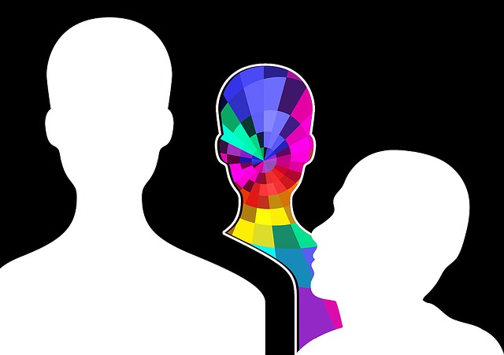

Quem Sou eu?
Bom, prefiro não revelar minha identidade(ééé ser anônimo), entretanto, tenho 13 anos. Apenas quero dizer isso. Sim, bom lembrar que eu sou burro então o site num é uma maravilha de desing nem de código em si.
Por que esse nome?
RaolootneXII é impossível de pronunciar, a não ser que você seja russo. Não, não é russo e sim uma mistura de root(do linux mesmo) mais alone (musica triste do naruto) e minha idade, em algarismos romanos, de quando fiz esse nick.
